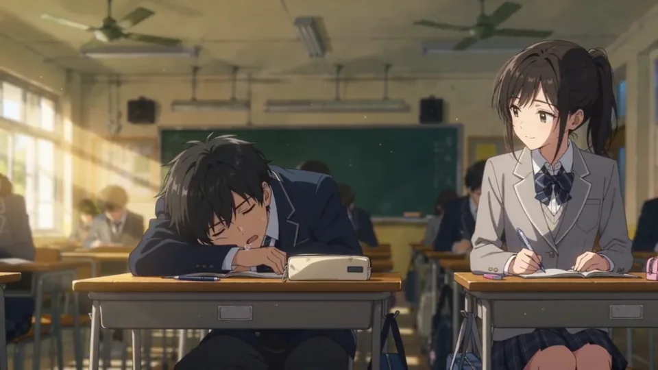

叙事短片 · 独立创作
少年英雄梦
0:59 · 剧本、分镜、影像生成与剪辑
制作与画面
短片在教室日常与幻想场景之间切换。从写剧本、画分镜、生成影像到剪辑成片，由我独立完成。
另一部独立作品《双屏之间》是 1 分 40 秒的反诈宣传短视频，本页暂未公开片源。
- 类型
- 叙事短片
- 制作
- 全流程独立完成
- 片长
- 59 秒
成片画面

叙事短片 · 独立创作
0:59 · 剧本、分镜、影像生成与剪辑
短片在教室日常与幻想场景之间切换。从写剧本、画分镜、生成影像到剪辑成片，由我独立完成。
另一部独立作品《双屏之间》是 1 分 40 秒的反诈宣传短视频，本页暂未公开片源。
